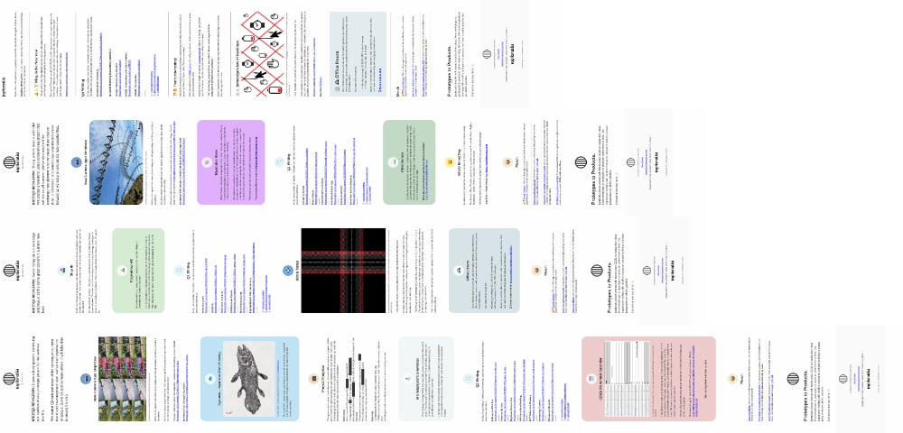

This is the Omnibus for 02025, where we look back at previous year’s posts and make various updates that we’ve noticed. We started this trend 16 years ago, all the way back in 02009. We are refining the objective of the Omnibus to focus on publishing: the website, newsletter, weeknotes and more. Other stats are available in the Annual Reports and some of that data is moved here to group publication related stats.
There is an Omnibus category to make it easier to find all related articles in a single place.
Past Omnibuses:
- 02009 Omnibus
- 02010 Omnibus
- 02011 Omnibus
- 02012 Omnibus
- 02013 Omnibus
- 02014 Omnibus
- 02015 Omnibus
- 02016 Omnibus
- 02017 Omnibus
- 02018 Omnibus (Did not post)
- 02019 Omnibus
- 02020 Omnibus
- 02021 Omnibus
- 02022 Omnibus
- 02023 Omnibus
- 02024 Omnibus
Articles
We are always trying new publishing cadences and in 02025 we decided to shift away from the monthly newsletter and focus on articles. We challenged ourselves to clear-out the drafts folder by publishing something every week! We settled into the rhythm of an alternating article and a double weeknote publishing schedule.
This year, we published 27 weeknotes and 25 articles for a total of 56,254 words. The average article word count was 1082 and we managed to publish 1 article a week. To date, we’ve used 19,280 unique words.
- Omnibus 02024
- 02024 TIL
- Optimized Charging
- 02024 Annual Report
- Mini Thermal Printer
- Eyjafjallajökull 15th anniversary
- Cellular Automata
- Muscle flexes
- Sawtooth and Sine Wave
- Ornithoto Camera App
- Disney Flowchart
- Blind Men and the Elephant
- Latency and the Sea
- Creative Tip Jars
- DejaView Camera App
- Wii Music Hand Holding
- LUT Cubes and Shaders
- Integrating Clusters
- Discussion Receipts
- Eh, Aye!
- Time for Timezones
- LEGO Wreath
- Willy Wonka Candy
- Black and White + 1 = Full Color
- Playfair Pies
Follow-ups
Back in September 02022, we wrote about the eSIM only iPhones. That’s when Apple started to sell their iPhones in the US without SIM card slots. Fast forward 3 years, and in Europe it is still possible to buy them with SIM card trays. We made the transition over to eSIM this fall and the transition has been pretty painless. Iceland has a single sign-on service that now has an app. Previously you had to go to the bank to verify the app. Luckily now, you can use your passport. This makes the whole process self-service and we have yet to find any public service that we can’t use the app.
Newsletters
We pause the monthly ⪮ Good Morning newsletter in 02025. Towards the end we felt we were writing and finding links just to fill the template. We decided to take a break to re-think how we want to structure and send the newsletter. In the meantime, we did continue to send out our ◍ Quarternotes which is every three months and focuses mostly on what we’ve been up too. We also challenged ourselves to write something every week, which we kept-up alternating between articles and weeknotes.

02025Q4: ◍ (optional.is) 02025Q4
Read Time: ~4.5 minutes. ~730 words.
02025Q3: ◍ (optional.is) 02025Q3
Read Time: ~3.5 minutes. ~600 words.
02025Q2: ◍ (optional.is) 02025Q2
Read Time: ~3 minutes. ~570 words.
02025Q1: ◍ (optional.is) 02025Q1
Read Time: ~3 minutes. ~570 words.
If you’re not getting our newsletter delivered to your inbox, you’re missing some interesting links!
Web Stats
We don’t do any paid advertising. The way we get people to know about us is via what we write and say. Any time we’re on a podcast, interview or conference we are representing (optional.is) and are promoting our expertise. This is a very slow burn. It might take a long time between someone seeing or reading and contacting us, but when it does we have already set some sort of understanding.
The other way is for us to constantly produce written works. That’s via the /required articles like this one and our newsletters. We don’t look closely at the stats because it might influence how or what we write about. We even removed all the tracking from the newsletters and send them ourselves – not through a 3rd party company. We also added feeds this year, so some people might not even read our content on our site and therefore they’re not in the server log analytics.
Here is a breakdown of the top articles in 02025. Some are very old and have lots of link juice in search engines. Some of the new articles have a quick burn of a month or less and others sleep for a while until someone re-posts and we get lots of traffic from a random forum or school course curriculum.
| Article | Year | Traffic |
|---|---|---|
| Welcome, the entire land | 02009 | 20.47% |
| Yankee Candles Levels of Abstraction | 02022 | 15.95% |
| SF Symbols Font | 02019 | 2.43% |
| What 2D Barcodes aren’t | 02011 | 2.21% |
| Near future of sports from a spectator’s point of view | 02009 | 1.58% |
| CERN Line Mode Browser | 02013 | 0.99% |
| TweetCC a Creative Commons Journey | 02010 | 0.94% |
| Color Name Abstractions | 02022 | 0.80% |
| Titanic: Behind the numbers | 02012 | 0.78% |
| Latency and the Sea | 02025 | 0.78% |
| iPhone IR Photography | 02023 | 0.78% |
| Pool Numbers | 02022 | 0.70% |
| PaperNet Boarding Pass | 02010 | 0.68% |
| Future predicting: What might happen in the next hundred years? | 02009 | 0.64% |
| Print On Demand | 02010 | 0.57% |
| Meyrin CERN Terminal Font | 02014 | 0.54% |
| Poisonous People | 02010 | 0.49% |
| Accessible Color Swatches | 02011 | 0.47% |
| Spimes: A birthday Story | 02013 | 0.46% |
| Ornithoto Camera App | 02025 | 0.42% |
| Ninja EDC Shinobi Rokugu | 02020 | 0.41% |
| Fast, Cheap, Good—Pick Two | 02011 | 0.40% |
When we compare this to last year, we can see several articles appear year after year. Unexpectedly, we had a few from 02025 make the list, along with Near future of sports from a spectator’s point of view which had a single massive spike in February. In November, our post from 02009 Welcome, the entire land, got mentioned on Hacker News. All the arm chair Egyptologists came out of the woodwork to have their opinion and cause that article to skyrocket into first place with nearly 2 orders of magnitude more traffic than everyone else.
46% of all the traffic to our articles were to the long tail of 414 other articles. This list of top 22 most visiting articles accounts for 54% of all our traffic and nearly 20% of that came from Hacker News in the last month of the year. This list would look very different if our articles got reposted in other high-profile places (or not gotten posted).
What’s next in 02026?
When it comes to the website, we are mostly thinking about our writing cadence. This year we published one article a week. Sometimes they were long, sometimes short. There is aways a trade-off in that the best way to get better at writing is to do it. Forcing a weekly writing cadence helps, but that also means that not every thing we publish is going to be gold. Writing just to hit weekly numbers shouldn’t be the goal either.
In 02026, we’re going to keep a similar writing cadence: four ◍ Quarternotes newsletters, fortnightly weeknotes, and articles in between. We’d like to resurrect our ⪮ Good Morning newsletter in some form, but that’s TBD.
What we’ve massively lacked is the self-promotion aspect of our work. We setup a /feeds page to help organize how to subscribe to all our content, but with the demise of Twitter and us not really making use of Mastodon, it’s hard to publish links to our content. We tried a bit on LinkedIn when we had something to promote (like our camera apps), but we can certainly do better in 02026 getting the word out more.